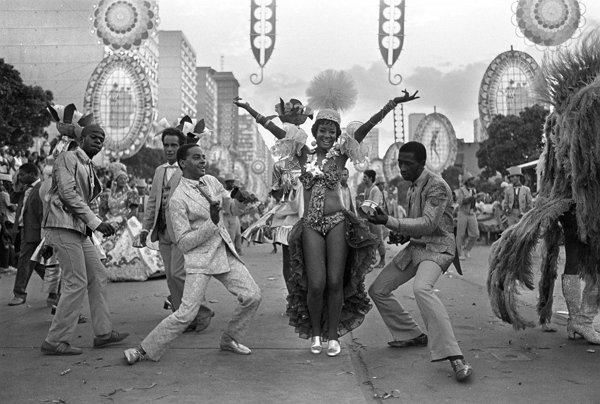
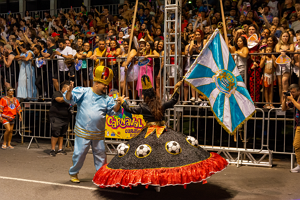
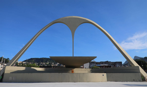
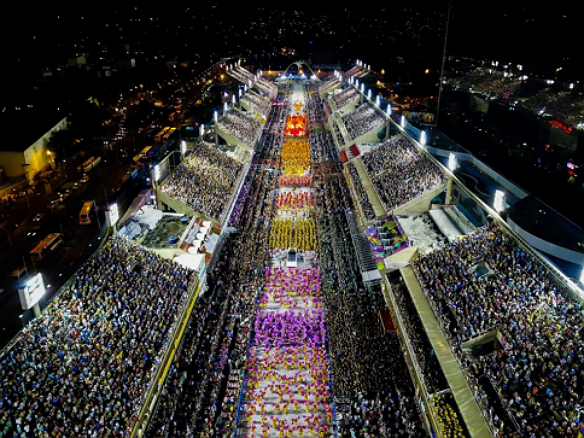

O que são e como surgiram?

são associações que surgiram na década de 1920, em meio a popularização do Carnaval e do samba. surgiram nos bairros populares e subúrbios da cidade do Rio de Janeiro, sendo a Deixa Falar a primeira história de nosso país.
O pesquisador Ricardo Albin afirma que as escolas de samba pegaram elementos dos “Zé Pereiras”, dos ranchos carnavalescos e das associações carnavalescas que surgiram no Rio de Janeiro no final do século XIX. Como a influência das procissões religiosas e o corso , também influenciaram o desenvolvimento das escolas de samba.
Surgimento das escolas de samba
Os historiadores consideram que a Deixa Falar foi a primeira escola de samba a surgir no Rio de Janeiro, em 12 de agosto de 1928. Os fundadores Ismael Silva, Alcebíades Barcelos, Nilton Bastos, Edgar Marcelino dos Passos, Osvaldo Vasques e Sílvio Fernandes. Fundada no bairro do Estácio,
Seus membros tinham envolvimento com ranchos carnavalescos e levaram essa experiência para o desenvolvimento dessa escola de samba. Motivou a criação de outras como a Portela e a Mangueira, surgiram.
Como as religiões africanas foram banidas em um Brasil católico, o samba não foi aceito pelos aristocratas por um longo tempo. O desfile de estilos das escolas de samba é uma imitação dos desfiles de grupos, que se apresentavam no século XIX. Mestre-sala e porta-bandeira, carros alegóricos, comissão de frente e enredos eram elementos do carnaval daquela época. Agora eles assumem grande importância como componentes do Carnaval das escolas de samba.
As contribuições da Deixa Falar-foram fundamentais para fixar as características principais das escolas atuais. Entre elas destacam-se: o gênero musical (samba moderno), o cortejo capaz de desfilar sambando, o conjunto de percussão, sem a utilização de instrumentos de sopro e a ala das baianas.
Desfiles das escolas de samba
A trilha que embalava esses desfiles era bem diferente do samba-enredo, gênero que nem existia na época. As pessoas cantavam os principais sucessos do ano anterior, muitas vezes em versões adaptadas para a polca ou o maxixe. Os ranchos eram animados pelas marchas-rancho, canções de andamento lento cujas grandes referências são Ó Abre-Alas, de Chiquinha Gonzaga, e As Pastorinhas, de Noel Rosa e Braguinha. Foram criados, a partir de 1932, e considera-se que o idealizador desse evento foi Saturnino Gonçalves, sambista e primeiro presidente da Mangueira. A ideia dos sambistas acabou sendo implantada por Mário Filho. A classificação foi a seguinte: Estação Primeira de Mangueira; Segunda Linha do Estácio e Vai Como Pode (dividiram o segundo lugar); Unidos da Tijuca.

o surgimento do sambodromo
Concebido por Oscar Niemeyer, expoente do modernismo e um dos responsáveis pela concepção arquitetônica de Brasília, ao lado do urbanista Lúcio Costa, o sambódromo do Rio de Janeiro foi inaugurado em 1984 e, desde 2021, é tombado pelo Instituto do Patrimônio Histórico, Artístico Nacional (Iphan).

O carnaval é,a maior festa popular do Brasil e, quem sabe, do mundo. Nele, o "povão" joga o papel principal: faz a festa e se diverte diante de si mesmo, quer desfilando na Passarela ou na Avenida, quer assistindo ao seu próprio desfile das arquibancadas O desfile das Escolas de Samba dessa maravilhosa São Sebastião do Rio de Janeiro é considerado, o maior espetáculo da terra, a maior festa do mundo. saiba mais sobre Oscar Niemayer, clique aqui.

* mais sobre o sambodromo,Clique aqui.